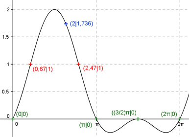
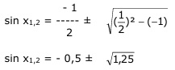

Aufgabe 230 Ergänzen Sie die Wertetabelle für x zwischen 0 und 2π: y = sin2 x + sin x x 2 0,67 oder 2,47 y 1,736 1 Amplitude = 2 (Berechnung siehe unten), Periode = 2π Berechnung der Nullstellen: 0 = sin2 x + sin x sin x (sin x + 1) = 0 sin x = 0 --> x1,2,3 = 0 + k * π, mit k = 1, 2, 3, ... sin x + 1 = 0 |-1 sin x = -1 --> x4 = (3/2)π x1 = 0 oder 0°, x2 = π oder 180°, x3 = (3/2)π oder 270°, x4 = 2π oder 360°. Berechnung der Amplitude A: Sie tritt an der Stelle x = π/2 oder 90° auf. Amplitude = f(π/2) = |sin² π/2 + sin π/2| = = |sin π/2 * sin π/2 + sin π/2| = |1 * 1 + 1| = 2  Funktionswert an einer Stelle x ermitteln: x = 2 = f(2) = sin2 2 + sin 2 = sin2 114,6° + sin 114,6° = 1,736 gerundet Berechnung der x-Werte für y = f(x) = 1 f(x) = 1 eingesetzt, existiert zweimal zwischen 0 und π bzw. 0° und 180° (siehe Graph). 1 = sin2 x + sin x |-1 sin2 x + sin x - 1 = 0 p, q - Formel: p = 1 ; q = -1  sin x1,2 = -0,5 ± 1,12 sin x1 = 0,62 --> x1 = arc sin 0,62 = 0,67 oder 38,4° x2 = (π - 0,67) = 2,47 oder 141,5° gerundet. sin x2 = -1,62 keine Lösung, sin x kann nicht kleiner als -1 werden.